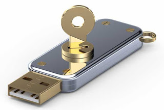

The Future
In the short term, there are no inherent defenses to the Ducky built into either USB 3.0, USB-C, or the HID standard. Defenses may emerge that rely on screening of devices and group policies, but these will probably be implemented on a case to case basis. The Ducky is likely to remain a reliably powerful method of hostile access for a long time. It would require fundamental changes to either the hardware or software of USBs and HIDs in order to plug the vulnerability that the Ducky uses.
In the long term, it's likely that future versions of the HID standard and of USB will contain signatures, security vetting, and other defenses against malicious devices. However, while this may make the Ducky more difficult to use, there will still be security holes in these measures. In that case, the Ducky simply becomes another access point that must be guarded against, with security measures that must be consistently patched and kept up to date. Just as some systems will have vulnerabilities in their network configurations, others will have vulnerabilities in their USB security configuration, making it one more part of the security tapestry.